前言
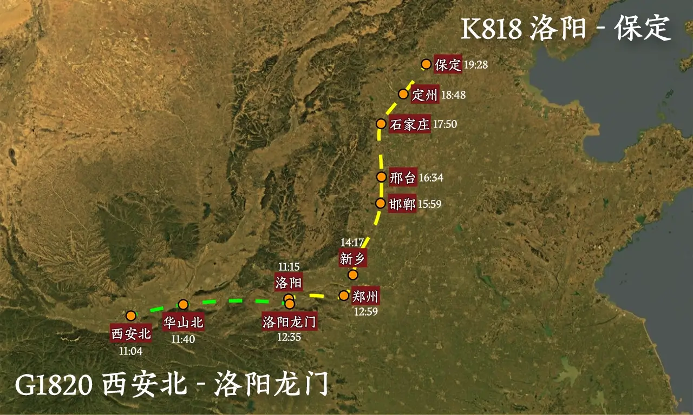
西安直达的保定的高铁将近 ￥500！我不能接受。中午 12:00 前退房好像也不太方便睡卧铺回去，于是先 G1820 西安北-洛阳龙门，洛阳待一晚上在 K818 洛阳-保定。算上住宿还可以省两百来块钱，还能再在洛阳小逛一下，我真是太聪明了🥳。
正文
6.15
06:30 吃早餐！
最后的早餐
西安外边太热了因此午餐晚餐基本都是民宿自己煮了😵，还没咋品尝过西安的美食，大早上跑出去试试凉皮和宫廷牛肉饼。
老板问了凉皮要不要加辣，我说不要，端上来感觉味道一般般，可能要有一点点辣才好吃吧。
10:48 西安北站🤠
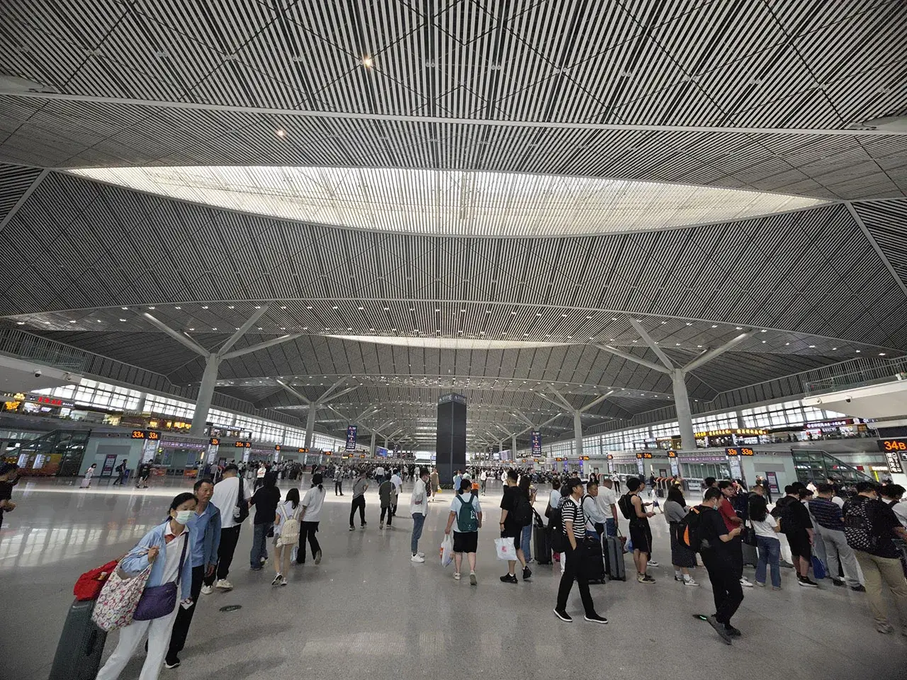
西安到洛阳的车次可多，慢悠悠地过去快到站了再买票，买到了 G1820：11:09 西安北-12:35 洛阳龙门。
11:35 西岳
华山论剑
就在车上简单路过一下华山吧！
11:55 崤山
石壕村里夫妻别，泪比长生殿上多~
高铁经过一串短短的山洞，出潼关了！之后窗外便是母亲河灌溉下的黄土地。
最后到洛阳龙门了！再倒腾一阵地铁到老城区的民宿。
14:43 九龙鼎

洛阳九龙鼎建成于 1992 年 9 月，是位于洛阳市老城区中州东路的标志性建筑，主体为 33 米高的花岗岩雕塑。其结构由九条盘旋龙柱支撑 1:1 西周兽面纹方鼎仿制品，通过九朝建都象征与青铜鼎元素展现洛阳十三朝古都的历史地位。雕塑基座镶嵌汉白玉《太极河图》浮雕，昼夜呈现不同视觉景观。
在民宿里闹一会儿，出发了。在洛阳计划的时间很短暂，加上前面逛的属实没剩下啥体力了，洛阳的许多景点只能下次一定了🤧。先去逛逛民宿楼下的丽景门，然后听说洛阳古墓博物馆挺火的，都上人民日报了，就决定去看一下。
14:43 丽景门😇

瓮城
丽景门位于河南省洛阳市老城区西门口街与金业路交叉口，是洛阳古城的标志性建筑之一，也是洛阳八景之一，有“不到丽景门，枉来洛阳城”的美誉。
请君入瓮~
14:48 商业街
经典三坊七巷
丽景门城门后又是商业街了。不过在其它地方待久了，觉得洛阳即使在商业街里，卖的东西也十分便宜🤔。
在西安还没有买伴手礼，于是就在洛阳买了两包牡丹酥，后来分给同学了自己一口没吃🤧。
不逛了，打车去洛阳古墓博物馆，9 公里只要￥16.84，打车也便宜。
15:03 至高无上之堂
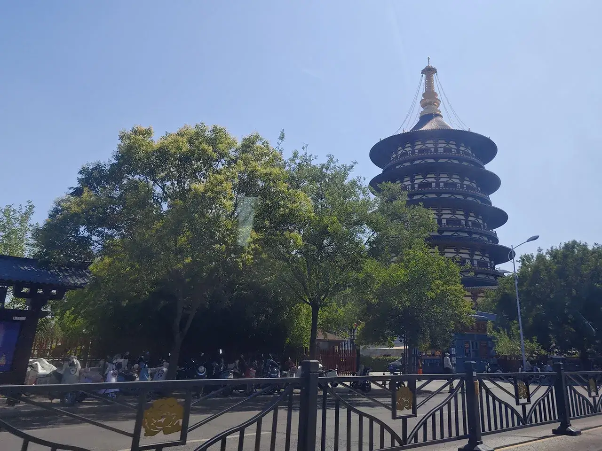
之前在响堂山坐车的时候，有个阿姨是洛阳的，说欢迎来洛阳看龙门石窟，于是本来打算这天晚上去看龙门石窟的，但是龙门石窟有点远，又看到了民宿脚下的隋唐洛阳城，就决定晚上还是看这个吧。
15:20 北邙山下😇
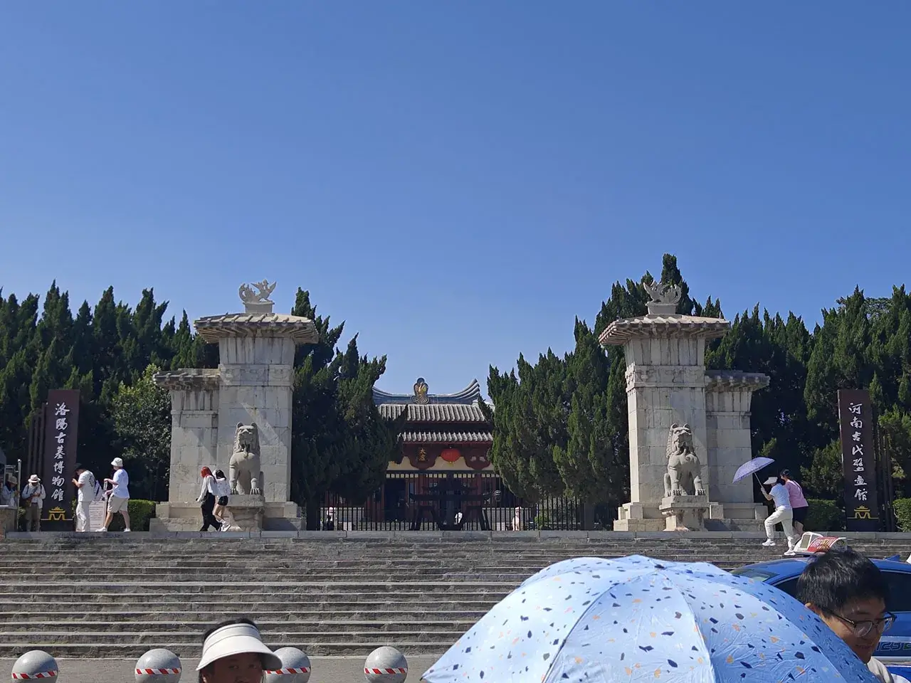
免费，好评🥳！人多，差评🤧！
15:22 洛阳古墓博物馆


太虚
前面是一个介绍古代生死观念的展厅，基本都是文字叙述，没啥意思。后面有各个在洛阳的古墓复原模型展览。
15:31 古墓复原模型
好一记洛阳铲！
在洛阳的墓实在是太多了！因此来参观的人也太多了！墓室里又特别狭窄，有些墓室排的队特别长，就放弃了。其实还蛮有意思的。
15:42 墓室壁画系列
北邙山头少闲土，尽是洛阳人旧墓~
在北邙山上出土的壁画~
15:57 十二生肖石像生
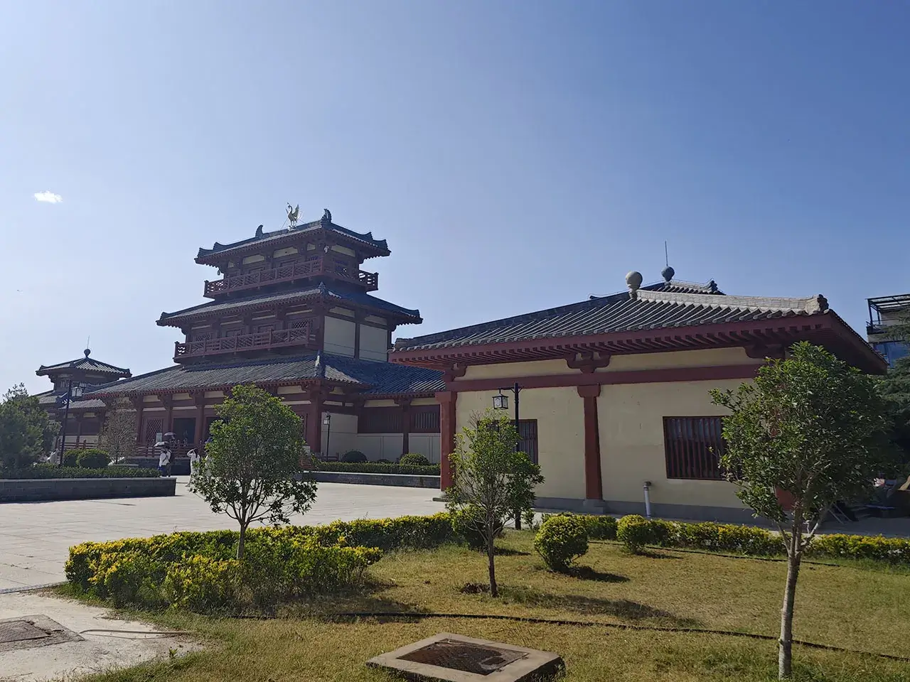
 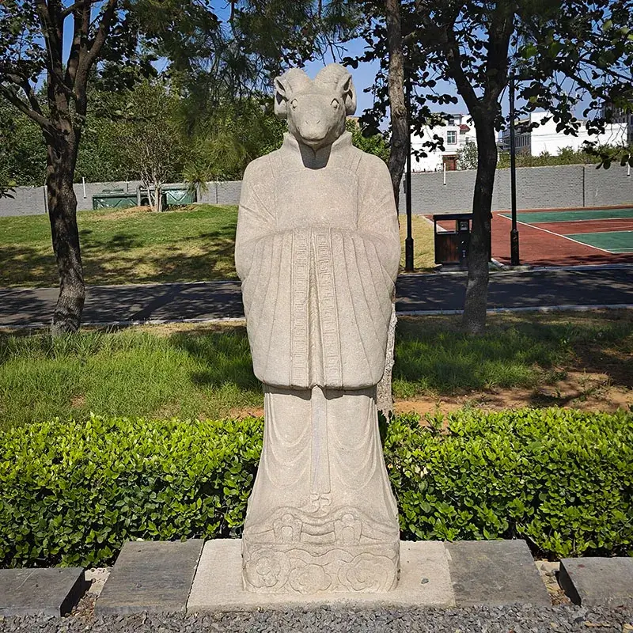
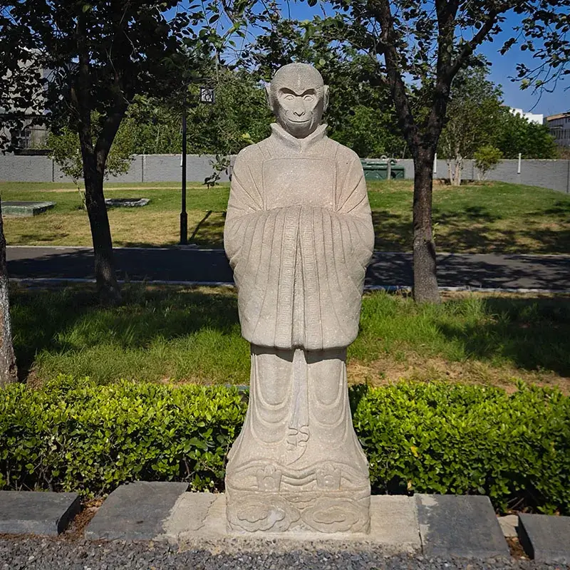
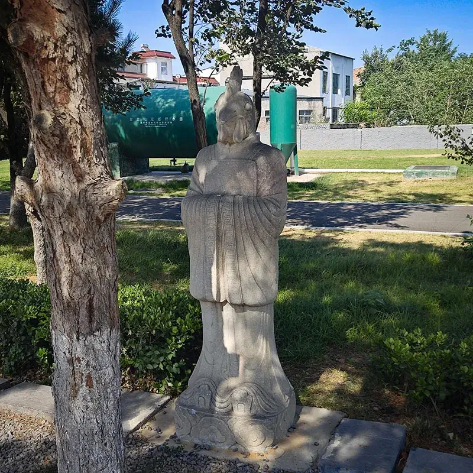
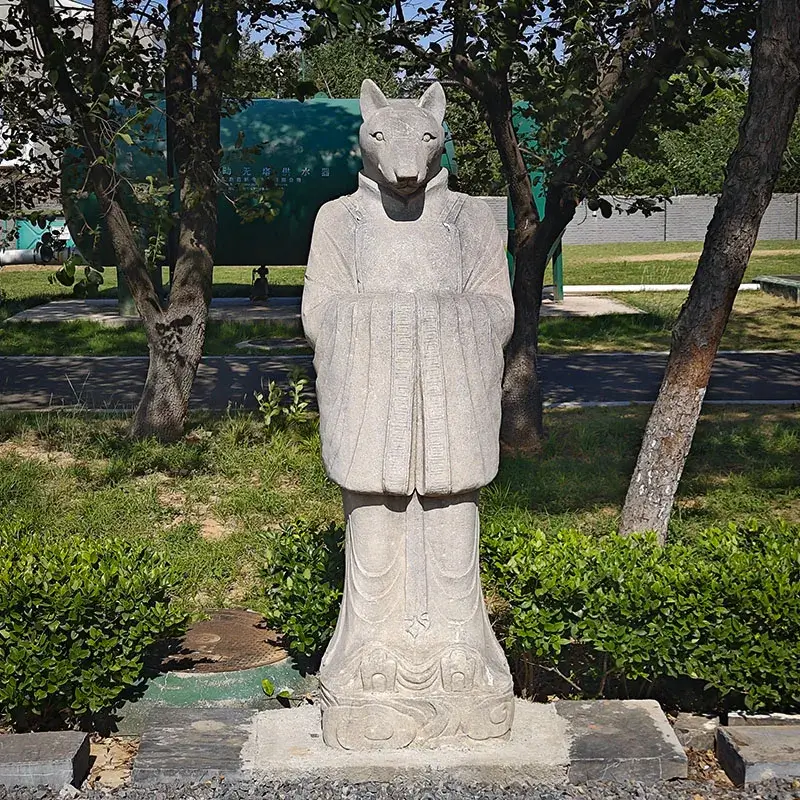
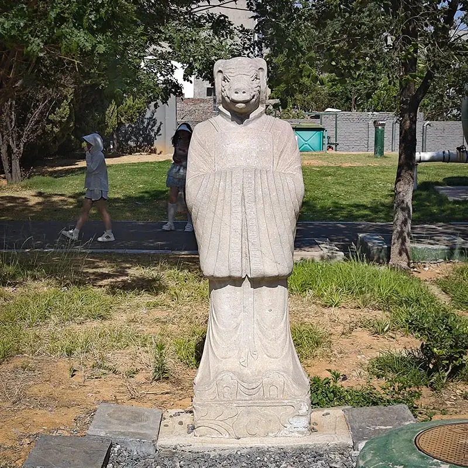
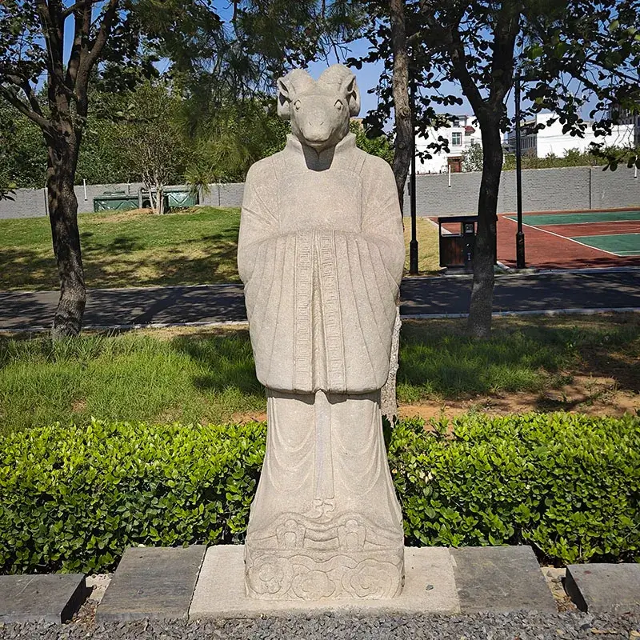
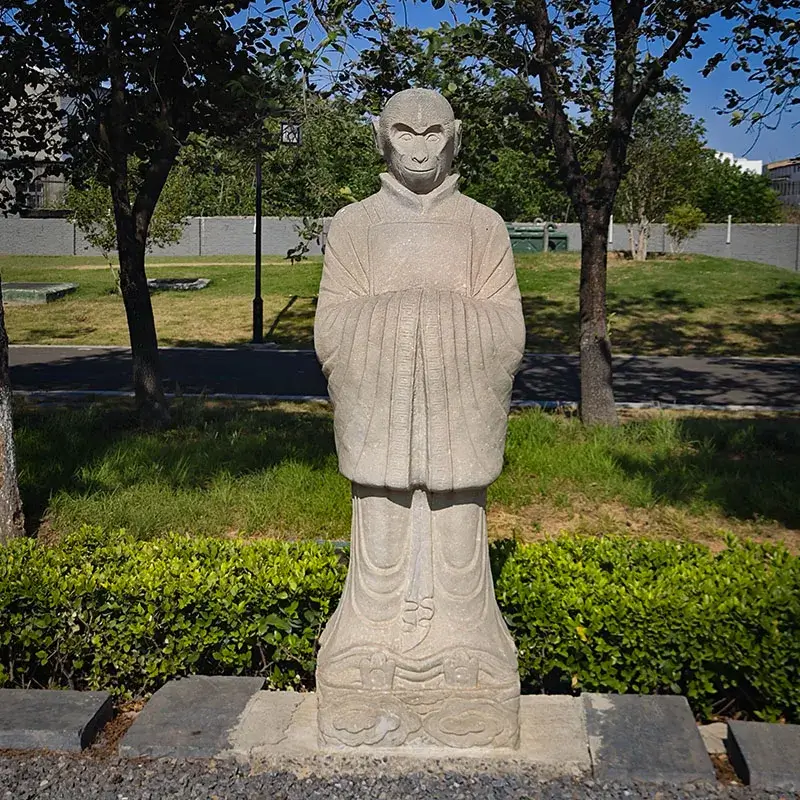
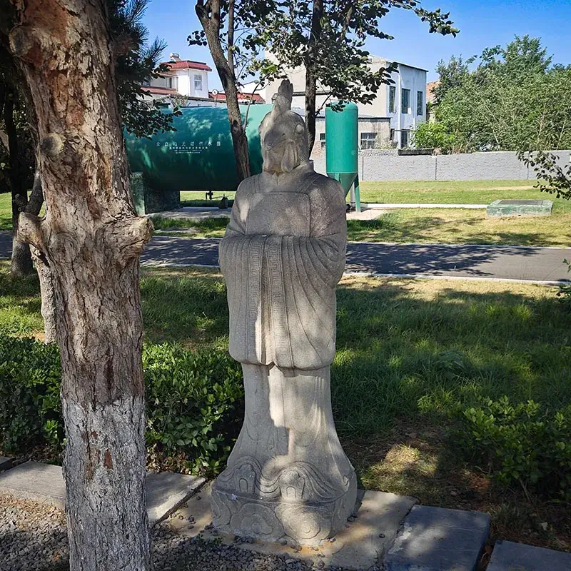
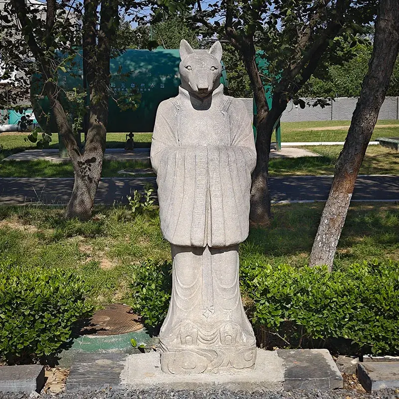
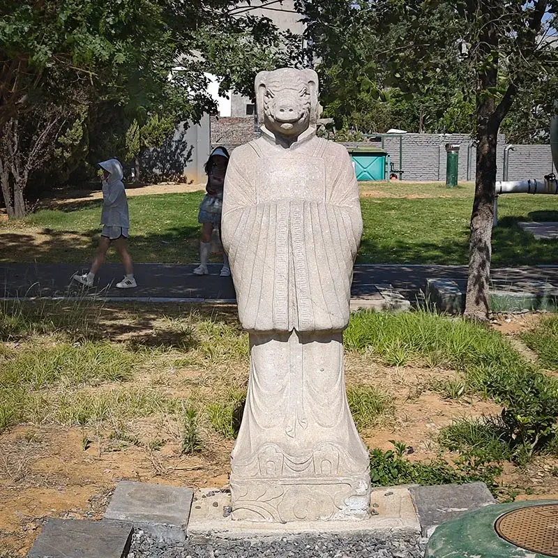
十二生肖石像生系列
应该是假的？不知道从哪里复原的石像生。
16:05 北魏宣武帝景陵
景陵
这个博物馆还有一个真 · 帝陵，就是北魏宣武帝景陵！
准备下坟！
挤挤挤！
游客密度惊人😵。
空荡荡
被盗干净了。
16:19 小土包
坟头
世民以精骑陈于北邙，登魏宣武陵以望之，谓左右曰：“贼势窘矣，悉众而出，徼幸一战，今日破之，后不敢复出矣！”——《资治通鉴》
不仅是理想的墓葬之地，更是兵家必争之地！
在宣武帝挂了的 105 年后，这个陵还有了别的作用😇。
16:39 回！
出租车司机讲河南话听不太懂😵！然后问我们是哪里人，我装作自己是西安人😎（估计口音直接露馅了）。问了下洛阳什么时候会天黑，司机回答道七点半左右吧，应该比西安早黑一些。
回去洗个澡，点个外卖，再在床上折腾一会儿再出来吧😇。
20:18 隋唐洛阳城😇
天堂，是武则天的礼佛堂，隋唐洛阳城“七天建筑”之一，寓意“至高无上之堂”，位于隋唐洛阳城 · 宫城——紫微城的核心区内，又称“通天塔”、“通天浮屠”等，
天堂分五级，至三级则俯视明堂， 具体记载高达 312.09 米，是世界古代史上的最高建筑。（但现存最高木构建筑释迦塔只有 67.31 米，郭黛姮教授认为从技术上来说这个记载是不确切的）。
公元 689 年，武则天在明堂之北建造巨大佛像，其小指犹容数十人，随后又建造天堂以安置大佛。天堂建造的消息传入日本后影响了奈良东大寺建设。695 年明堂、天堂一同被焚毁，武则天重建明堂，天堂改作佛光寺。
天堂遗址地下夯土层直径有 70 米之多，在遗址上复建的新“天堂”高 88.88 米，并非历史上天堂的原样复原，而是座保护展示性建筑，于 2014 年 4 月开放参观。
古时候的天堂已经不知道是什么样了……要是真有 312 米高，放在如今的福州都是第一高楼了，太假了😵。
20:20 应天门
应天门
应天门的土堆上原址重盖了应天门。不仅美观还起到一定的保护作用。
20:30 应天门灯光秀
这还是一个意料之外的项目。突然应天门灯黑了，第一反应是停电了，结果是说要开始灯光秀！论效果我是觉得比大雁塔喷泉要更好一些的。
下面是我对灯光秀内容的片面理解。


20:50 万象神宫

明堂是洛阳紫微城的大朝正殿，又称“万象神宫”“通天宫”，是隋唐洛阳城“七天建筑”之一，唐、武周神都洛阳的地标性建筑，高达 98 米，是世界历史上体量最大的木质建筑，被誉为“中国古建筑的巅峰之作”。
隋朝建国之初就计划建造明堂，唐垂拱三年春（687 年），武则天正式创建明堂，次年建成，号“万象神宫” ，纵民参观。证圣元年（695 年）明堂被毁，重建改号“通天宫”。 宝应元年（762 年），唐朝统治者纵容回纥劫掠东京洛阳，明堂被彻底损毁。
明堂共三层，底层方形，象征四季；中层十二边形，象征十二时辰，九龙捧之；上层二十四边形，象征二十四节气。顶层置金凤（后改作火珠），中有巨木十围（周长 15 米），上下通贯。明堂分为五个殿堂，中为太室，武则天号为端扆殿；又通达四出，分东西南北四向室，东出谓之青阳，南出谓之明堂，西出谓之总章，北出谓出玄堂。四向室各有左右房谓之个，即“左个”“右个”。遗迹主要由宫城正殿夯土基址、正殿宫院院门、宫院步廊、水渠等组成，形成以宫殿为中心，由宫院院门和步廊围合而成的宫院院落而布局。
旁边的隋唐洛阳城公园￥30，凭高铁票还可以半价￥15，比西安实惠多了😭！但是还是下次一定了~
洛阳有共享电车！好评！骑车兜一圈回去了。
21:05 夜 · 九龙鼎
睡觉，明天见！
6.16
10:04 潼关肉夹馍
硬要去的话还是可以去龙门石窟的，但是还是选择在床上赖皮了😇。洛阳还是挺有意思的，有时间下次再来~
因为要坐很久的绿皮，又是噼里啪啦把一整天的伙食都买好了。试试洛阳的“潼关肉夹馍”吧！只比学校的贵 ￥1，而且跟学校的一样有加青椒的选项！但是还是没有学校的好吃实惠！
10:52 洛阳地铁
作为河南的老二，洛阳早已没有古时候的地位，但是还是有俩地铁的。不过地铁的车次特别少，丽景门-1 号线-解放路-2 号线-洛阳火车站。一趟地铁都要快 10 分钟才到，怪不得导航并不建议坐地铁去呢。
11:12 洛阳站
小小的火车站，充满了历史气息😇。
墙上的砖画继续展示着洛阳曾经的恢宏。
11:13 挤挤挤！
K818 11:15 洛阳-19:28 保定，￥91。绿皮确实便宜，当然体验也差，感觉脏兮兮的🫠。
13:45 黄河
15:31 漳河
估计也是邺城不能再重建的原因之一，气候变化漳河已经干涸了😵，这个地方已经不适合居住了。
19:39 河北保定
这甚至可能是这辈子最后一次来保定站了……其实随着西安洛阳之行的结束，在保定的日子也要接近尾声啦！
19:46 保定站
打车回学校！￥19.81。